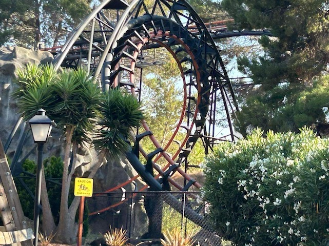
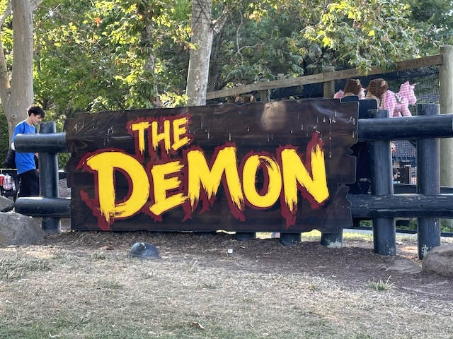

| |
Demon Review
We're here at California's Great America. Today's ride we'll be reviewing for you is Demon. When I first saw the ride on the Discovory Channel way back in 2001, I thought that Demon looked FANTASTIC! One part that really mezmerized me was the rock that went through one of the loops. Ok, flash foreward 5 years later to my first visit to Californias Great America. I rode Demon, and it SUCKED!!!!!! Flash foreward another 4 years and I have returned to see how Demon is. You first hop in the trains and away you go. You first go through a tunnel. In the tunnel, it is quite depressing as you can clearly see that the special effects used to work. It kind of looks like a garage with all those lights all around the room. It almost reminds me of going through someones old garage with all the burned out lights and wires all around. But I must admit that there is one cool thing still there in Demon. Demon still has the tunnel soundtrack, which is actually pretty cool. But our time in the garage is now over and now we climb up the lifthill. After climbing up the lifthill, we go around a turn. From the turn, you can see past the trees and look at the beautiful city of Santa Clara. But that's all gone as we plummet down the first drop. While it's nothing special or cool, it's at least fun. Then we go through Loop #1. Its a fun loop with a few good Positive Gs. Then we go through Loop #2. This is exactly like Loop #1. Except there's something missing here. Oh yeah. That Rock was missing. Well, there goes the one part of that ride that actually looked cool (Hey, at least Six Flags Great America's Demon still has that rock through the loop). After Loop #2, we go into the tunnel. Back in 2006, there were some really nasty (and heavy) trims in this tunnel. But in all my later visits, they wern't there. We actually kept going through at normal speed!! =) We then rise up and head around a turn. Then we pass through the demon's mouth where we head into a double corkscrew. The Corkscrews are nothing special. But they are fun. After going through those two corkscrews, we rise up into a forceless helix where we glide into some straight track that's supposed to be the brake run. While this ride still sucks, It's definetly improved over the years. So I'm at least glad to see that Demon is getting some care from Cedar Fair. I'd recommend this if you're trying to go upsidedown for the first time or simply like loopscrews. If you want to ride the real Demon though, go ride it at Six Flags Great America.
5/10
Location: California's Great America
Opened as Turn of the Century in 1976.
Modified into Demon in 1978.
Built by: Arrow
Credit #50
Last Ridden: July 29, 2024
I have ridden this exact same ride at the following parks.
Six Flags Great America
Demon Photos





Home
|